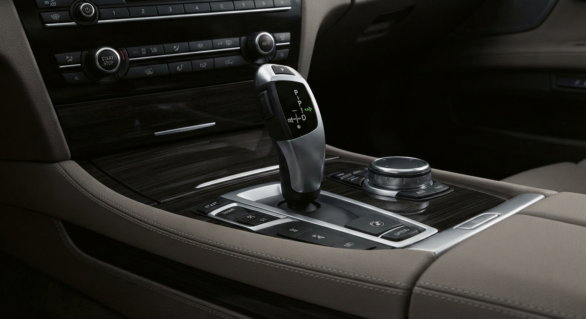
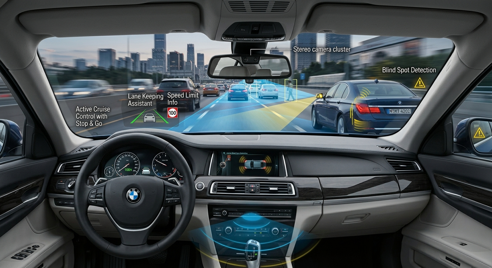

BMW F01 LEGACY
The art of engineering. The legacy of luxury.
Brief History and TimelineUnveiled in Moscow in July 2008, followed by the Paris Motor Show in October 2008. Styled by Karim Habib under the direction of chief designer Adrian van Hooydonk, moving away from the controversial styling of the preceding E65 generation toward a more traditional, clean aesthetic.

Platform
Built on the BMW L6 platform, which also underpinned the Rolls-Royce Ghost. The legendary BMW L6 platform is an internal modular rear-wheel and all-wheel-drive vehicle architecture developed by BMW for its full-size and executive luxury models.
Facelift(LCI)
The coming of the Life Cycle Impulse update in 2012 for the 2013 model year brought updated LED headlights, revised bumpers, an upgraded iDrive system, and a standard 8-speed ZF automatic transmission. The Life Cycle Impulse update pushed through 2012 2013 2014 finalizing its journey in 2015 paving way for a new generation and also ending an era of controversy for BMW.

End of the F01 Cycle
The F01 did a good run until July 2015, before being succeeded by the G11 generation which was a very very very beatiful predecessor to the marvellous F01.
The F01 Story
The BMW 7 Series has a rich heritage dating back to its introduction in 1977. It has consistently represented the pinnacle of BMW's engineering and luxury, evolving through multiple generations to incorporate cutting-edge technology and design.
It is well known for pulling the 7 Series out of the controversial "Bangle era" design language and introducing a wave of modern automotive engineering "firsts" for the brand. Overall the F01 generation of the BMW 7 Series is remembered for its blend of luxury, performance, and technological innovation, solidifying its place in automotive history.
Pre-LCI vs LCI
The BMW F01 7 Series LCI (Life Cycle Impulse / Facelift) was introduced for the 2013 model year (July 2012 production). It brought critical mechanical updates, cosmetic modernizations, and massive leaps in reliability over the pre-LCI (2009–2012) models
Pre-LCI
The pre-LCI models of the BMW F01 7 Series, produced from 2009 to 2012, were known for their distinctive styling and innovative features. However, they faced criticism for certain design elements and mechanical issues that affected their overall reliability and performance.
- 6-Speed Transmission: Uses an older, less efficient automatic gearbox.
- N54 & N63 Engines: Early twin-turbo setups prone to high oil consumption and injector failures.
- Classic Styling: Traditional round xenon headlights and turn signals located on the front side fenders.
- Analog Gauges: Standard physical dials with a slower, older iDrive (CIC) screen.
LCI
The LCI (Life Cycle Impulse) models of the BMW F01 7 Series, produced from 2013 to 2015, represented a significant improvement over the pre-LCI versions. These models featured updated styling, enhanced technology, and improved mechanical components that addressed many of the issues found in earlier models.
- 8-Speed Transmission: Upgraded to a more efficient automatic gearbox for smoother shifting and better fuel economy.
- N63TU Engine: Updated twin-turbo V8 with improved reliability and reduced oil consumption.
- Modern Styling: Sleeker LED headlights and integrated turn signals for a contemporary look.
- Digital Gauges: Enhanced iDrive (CIC) system with faster response times and improved user interface.
Models
The 7 series in this generation featured various models and their engine configurations and specs too we shall start with the body variants.
Model Variants & Body Styles
- F01: Standard-wheelbase sedan
- F02: Long-wheelbase sedan (badged with an "Li" suffix, such as 750Li)
- F03: High Security 7 Series armored car.
- ActiveHybrid 7 (hybrid-electric variant).
- Alpina B7: High-performance tuned variant offered in both standard and long-wheelbase versions

The 7 series lined up in a garage very majestic
Engines
BMW F01 Engine Summary
The BMW F01 (7 Series) was produced from 2008 to 2015. It featured petrol, diesel, and hybrid engine configurations.
Petrol Models
- 730i: 3.0L naturally aspirated inline-6 (258 hp)
- 740i (2008–2012): 3.0L twin-turbo inline-6 (326 hp)
- 740i (2012–2015): 3.0L single-turbo inline-6 (320 hp)
- 750i: 4.4L twin-turbo V8 (407–450 hp)
- 760i: 6.0L twin-turbo V12 (544 hp)
Diesel Models
- 730d: 3.0L turbocharged inline-6 (245–258 hp)
- 740d: 3.0L twin-turbocharged inline-6 (306–313 hp)
- 750d: 3.0L tri-turbocharged inline-6 (381 hp)
Hybrid & Performance Variants
- ActiveHybrid 7: V8 hybrid (pre-facelift) or inline-6 hybrid (facelift)
- Alpina B7: High-performance tuned 4.4L V8 (500–540+ hp)
Tech and safety features
The F01 was pretty advanced for its time and had several features which varied.
The features included
- Performance & Powertrain: 6- or 8-speed ZF automatic transmissions, xDrive all-wheel drive, and Integral Active Steering (rear-wheel steering).
- Technology & Assistance: Next-gen iDrive with 3D graphics, Night Vision, Lane Departure Warning, Active Cruise Control, and a Head-Up Display.
- Luxury & Cabin Comfort: Heated, ventilated, and massaging multi-contour seats, soft-closing doors, Comfort Access, and a 1,200-watt Bang & Olufsen audio system.
- Display Upgrades: A 10.25-inch multifunctional black-panel digital instrument cluster and optional 9.2-inch rear seat entertainment screens.
Zf Transmission

The zf Transmission could be offered in a 6 speed and an 8 speed too depending on the trim
Technology

The car also featured ADAS (Advanced Driver Assistance Systems) which can be seen in the picture above which were features that simplified everyday driving
The car also received new headlights in 2012 too being among the earliest to get Full LED headlights transitioning from the old xenons from the pre LCI. The headlights had features such as automatic highbeam Assistance and were adaptive which was advanced for its era. The headlights modernised the look completely ending the more rounded era of BMW headlights.

The LCI final looked was loved by many

The final look of the BMW was loved by many and cherished by many and the technology it packed indeed. The car also had leather seats too in the interior with massaging function and memory and also it had also a refredgirator though not on all models. The Trims could also get night vision too though not all of them.
In general this generation of the 7 series brought about so many changes that revolutionalized the automotive world through BMW.
Performance
The BMW F01 7 Series was designed to offer a balance of luxury and performance, with various engine options and advanced technologies that enhanced driving dynamics. Here are some key performance aspects:
- Engine Options: The F01 offered a range of engines, including inline-6, V8, and V12 options, as well as diesel and hybrid variants. This allowed buyers to choose between fuel efficiency and high performance.
- Acceleration: Depending on the engine choice, the F01 could accelerate from 0 to 60 mph in approximately 5.0 to 6.0 seconds for the V8 models, while the V12 models could achieve it in under 5 seconds.
- Handling: The F01 featured advanced suspension systems, including adaptive air suspension and active roll stabilization, which provided a smooth ride while maintaining excellent handling characteristics.
- Braking: High-performance braking systems were available, including ventilated disc brakes and optional ceramic brakes for enhanced stopping power.
- Driving Modes: The F01 offered selectable driving modes (Comfort, Sport, Sport+, etc.) that adjusted throttle response, steering feel, and suspension settings to suit different driving preferences.